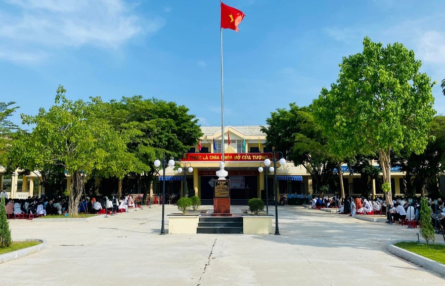

TRƯỜNG THPT LÝ TỰ TRỌNG – HÀNH TRÌNH HƠN 20 NĂM
XÂY DỰNG, PHÁT TRIỂN VÀ TỎA SÁNG
1. LỜI NGỎ
Thi sĩ Nguyên Hữu - một cây bút khá mới mẻ - đã chắp bút trong thi phẩm “Nỗi đau thời gian” những vần thơ đầy trăn trở:
“Tiếng thời gian vẫn êm ả ngân nga
Đẩy dòng đời theo năm tháng dần qua
Và “thời gian sẽ xóa mờ tất cả”…
Có đúng không?... vọng câu nói ngàn đời.”
“Và thời gian sẽ xóa mờ tất cả” đó không chỉ là suy tư của riêng Nguyên Hữu mà còn là nỗi niềm âu lo của bao người, bao lớp thế hệ về sức mạnh hủy diệt của thời gian đối với vạn vật. Từng giây từng phút trôi qua, thời gian đều có thể “phủ rêu” và khiến cho mọi vật dù có linh hồn hay vô tri sẽ dần dần “úa màu” theo năm tháng. Thế nhưng sự nghĩ suy ấy liệu rằng “có đúng không” khi thời gian đôi lúc lại là lời giải đáp duy nhất để chúng ta hành động và minh chứng được giá trị, ý nghĩa về một điều gì đó?
Hai mươi năm có lẻ - một quãng thời gian khá dài, từ lúc Trường trung học phổ thông Lý Tự Trọng đặt những viên gạch nền móng đầu tiên cho đến khi khẳng định được vị thế của chính mình trong sự nghiệp giáo dục của tỉnh nhà. Nếu được tính bằng thời gian “một phần ba đời người”, ngôi trường đã đi qua cái thời sơ khai để giờ đây trở thành một “thanh niên” với trái tim tràn đầy nhựa sống, nhiệt huyết, đam mê và bản lĩnh. Và ở đó, với bề dày của thời gian và sự tận tâm tận lực dựng xây, cống hiến của đội ngũ cán bộ, giáo viên, nhân viên, từ một ngôi trường khiêm nhường nay Trường THPT Lý Tự Trọng đã vững vàng hơn, tự hào hơn với những thành tích đạt được trên mọi phương diện.

Trường THPT Lý Tự Trọng là một trong 54 trường THPT và PTDTNT trực thuộc Sở Giáo Dục và Đào Tạo Quảng Nam, với nhiệm vụ thực hiện sứ mệnh giáo dục cao cả “rèn đức luyện tài” nhằm đào tạo những thế hệ học sinh có đủ bản lĩnh và trí tuệ phục vụ cho công cuộc xây dựng đất nước. Trường THPT Lý Tự Trọng chính là “một mảnh ghép” trong 54 “mảnh ghép” ấy, tự hào là một trong “những ngôi trường xứ Quảng” góp phần làm nên diện mạo toàn diện cho nền giáo dục tỉnh Quảng Nam.
2. HÀNH TRÌNH XÂY DỰNG VÀ PHÁT TRIỂN
 Theo dòng lịch sử, Trường THPT Lý Tự Trọng có tiền thân là trường cấp II – III Bình Trị. Tuy nhiên, giữa những năm tháng khốc liệt của kháng chiến chống Mỹ, với sự oanh tạc của “bão đạn mưa bom” nên ngôi trường đã phải tạm dừng hành trình “gieo chữ”. Mãi đến ngày 26/06/2000 với quyết định số 35 của UBND tỉnh Quảng Nam đã mở ra một trang mới cho Giáo dục vùng Tây thăng Bình - ngôi trường cấp III được thành lập, điều đặc biệt là trường được mang tên Lý Tự Trọng.
Theo dòng lịch sử, Trường THPT Lý Tự Trọng có tiền thân là trường cấp II – III Bình Trị. Tuy nhiên, giữa những năm tháng khốc liệt của kháng chiến chống Mỹ, với sự oanh tạc của “bão đạn mưa bom” nên ngôi trường đã phải tạm dừng hành trình “gieo chữ”. Mãi đến ngày 26/06/2000 với quyết định số 35 của UBND tỉnh Quảng Nam đã mở ra một trang mới cho Giáo dục vùng Tây thăng Bình - ngôi trường cấp III được thành lập, điều đặc biệt là trường được mang tên Lý Tự Trọng.
Những ngày sơ khai, ngôi trường gặp nhiều khó khăn với cơ sở vật chất còn thiếu thốn, chưa đáp ứng được yêu cầu và nhiệm vụ dạy học; đội ngũ giáo viên, nhân viên luôn trong tình trạng thiếu và nhiều biến động; chất lượng đầu vào của học sinh còn thấp; bên cạnh đó, trường nằm ở vùng cánh Tây Thăng Bình với điều kiện địa lí không thuận lợi, đời sống nhân dân và học sinh còn nghèo. Tuy khó khăn là thế, nhưng cả thầy và trò Trường THPT Lý Tự Trọng không nhìn vào hoàn cảnh để nhụt chí, nản lòng mà ngược lại lấy điểm yếu để phấn đấu, khắc phục khó khăn, hoàn thành tốt nhiệm vụ dạy và học.